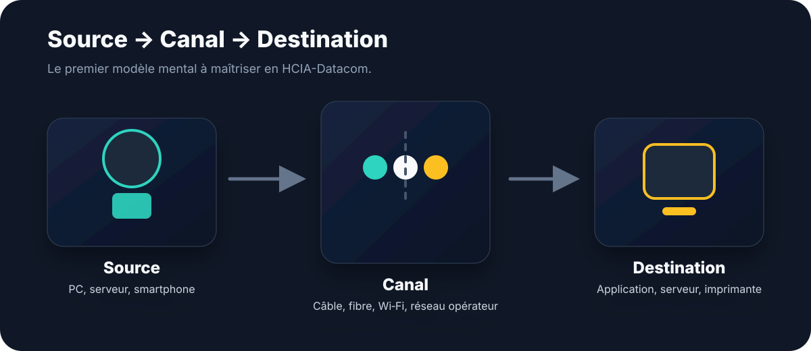
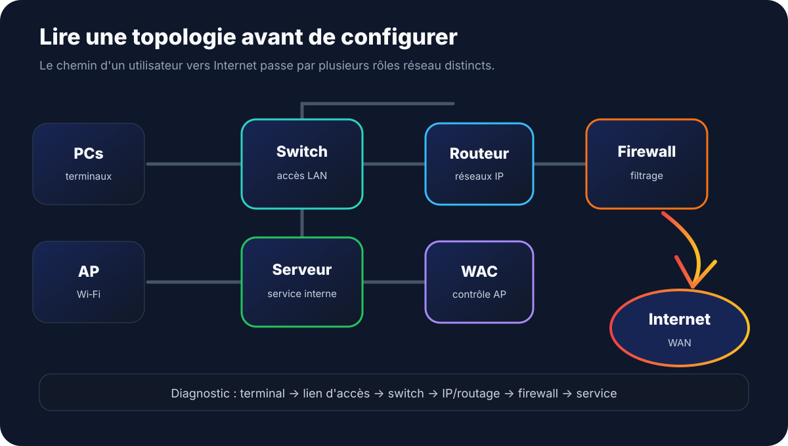

Huawei HCIA-Datacom · Débutant
Comprendre les réseaux de communication de données.
Le premier réflexe d’un futur ingénieur Datacom n’est pas de configurer : c’est de voir le chemin de la donnée, reconnaître les rôles des équipements et vérifier dans le bon ordre.

1. Qu’est-ce qu’un réseau de communication de données ?
Un réseau de communication de données est un ensemble d’équipements, de supports et de règles permettant à des systèmes d’échanger de l’information.
Une communication simple contient toujours une source, un canal et une destination. La source envoie, le canal transporte, la destination reçoit.
L’image du colis aide : l’expéditeur est la source, la route est le canal, et le destinataire est la destination. Dans un réseau, le colis devient une donnée, et la route devient une suite de liens Ethernet, Wi‑Fi, fibre, switches, routeurs et règles de sécurité.
2. Les rôles essentiels dans un réseau Datacom
| Élément | Rôle | Erreur fréquente |
|---|---|---|
| Terminal | Produit ou consomme les données. | Oublier que la panne peut venir du poste. |
| Switch | Connecte les équipements d’un LAN. | Le confondre avec un routeur. |
| Routeur | Relie plusieurs réseaux IP. | Croire qu’il remplace toujours le firewall. |
| Firewall | Filtre et sécurise les flux. | Oublier les règles de sécurité. |
| AP / WAC | Fournit et centralise l’accès Wi‑Fi. | Ne pas vérifier l’association Wi‑Fi. |
| Serveur | Fournit un service : DNS, DHCP, web, fichiers. | L’accuser avant de vérifier le chemin réseau. |
3. Voir la topologie avant de configurer
Une topologie montre comment les équipements sont organisés. Elle peut être physique, avec câbles et ports, ou logique, avec rôles, VLAN, sous-réseaux et chemins.

Avant de toucher à la configuration, identifiez les terminaux, les switches d’accès, la passerelle, la sortie Internet, le firewall, les AP, le WAC et les serveurs.
4. LAN, MAN, WAN : comprendre l’échelle
| Type | Portée | Exemple |
|---|---|---|
| LAN | Zone locale. | Bureau, salle, campus proche. |
| MAN | Zone métropolitaine. | Sites d’une ville ou grande université. |
| WAN | Grande distance. | Agences, villes, pays, opérateur. |
5. Penser comme un ingénieur HCIA-Datacom
Quand une communication échoue, avancez dans cet ordre : terminal, câble ou Wi‑Fi, switch d’accès, VLAN ou segment réseau, adressage IP, routage, firewall, serveur ou application.
Cette méthode évite de commencer par des commandes avancées alors que la panne vient parfois d’un câble, d’un port down, d’une mauvaise IP ou d’une passerelle absente.
6. Premières commandes Huawei à connaître
display version
display device
display interface brief
display ip interface brief
display current-configuration
display this
ping
tracertUne commande doit répondre à une hypothèse. On ne dépanne pas au hasard : on vérifie un point précis du chemin.
7. Mini-lab TianSemi
Dessinez un petit bureau avec 10 PC, 2 imprimantes, 2 AP, 1 switch d’accès, 1 routeur, 1 firewall et 1 serveur interne.
- Nommez chaque équipement.
- Indiquez son rôle.
- Tracez le chemin d’un PC vers Internet.
- Identifiez trois points de panne possibles.
- Associez une commande Huawei à chaque vérification.
Suite du training
La suite du parcours abordera les modèles de référence, l’encapsulation, VRP, les opérations de base sur équipements Huawei et la configuration VLAN.